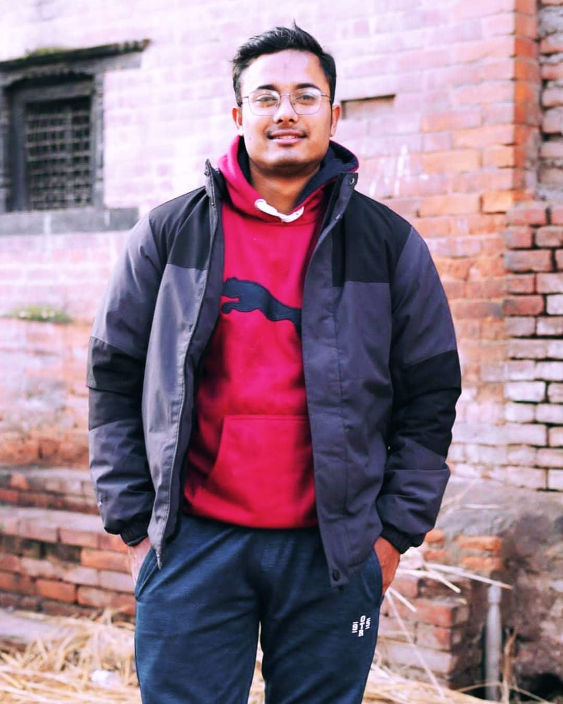

My Resume
Summary
Hello there! My name is Sunny Wali, and I'm currently pursuing my Master of Computer Applications (MCA) degree at Quantum University in Roorkee, Uttarakhand, India. I have a deep passion for both web development and Data Structures and Algorithms (DSA), and I'm dedicated to honing my skills in these areas. In the realm of web development, I'm constantly exploring the latest technologies and frameworks to create dynamic and user-friendly web applications. From frontend technologies like HTML, CSS, and JavaScript to backend frameworks such as Node.js and Spring Boot, I strive to build robust and efficient solutions that enhance user experiences. Additionally, my interest in Data Structures and Algorithms drives me to delve into the core principles of computer science. Through Java, I'm mastering various data structures, algorithmic techniques, and problem-solving strategies, which not only sharpen my coding abilities but also prepare me to tackle complex computational challenges. Outside of academics, I enjoy staying updated with industry trends, participating in coding competitions, and collaborating on projects that push the boundaries of my knowledge. I'm enthusiastic about leveraging technology to solve real-world problems and am eager to contribute meaningfully to the field of computer science. Feel free to reach out if you share similar interests or if there's an opportunity for collaboration or discussion. I'm always excited to connect with fellow enthusiasts and professionals in the field!